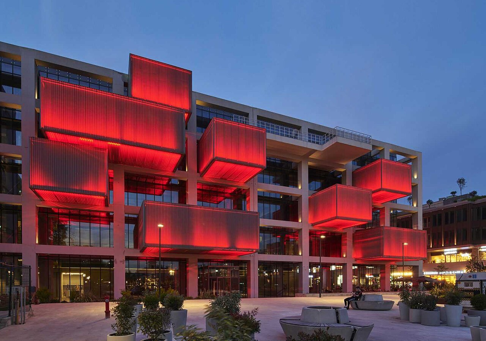
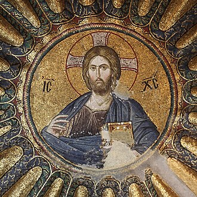
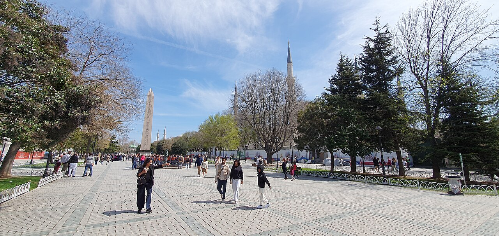
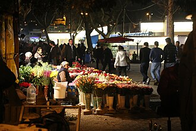
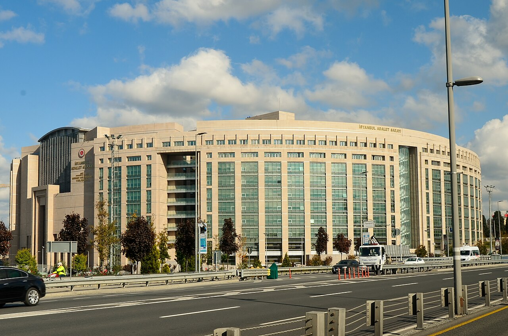
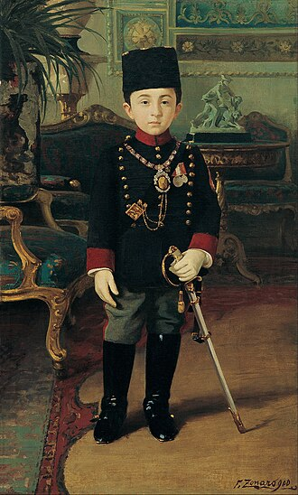
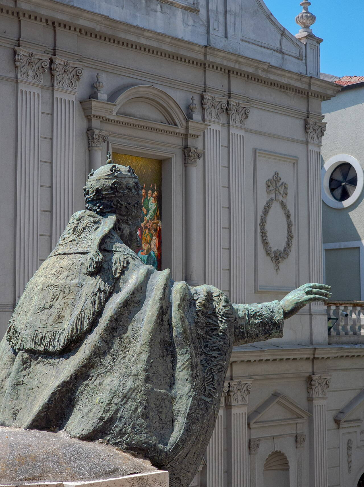
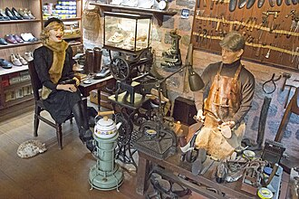
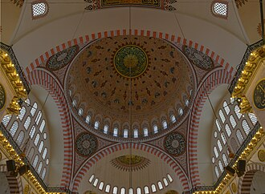

Исторические и справочные гербы


Istanbul
Путеводитель. Объектов в этом выпуске: 34.
OTIUM — практика нарочитого досуга. В античном смысле otium — не побег от работы, а время, когда внимание возвращается к памяти, пейзажу и мысли — без прикладного дедлайна.
Мы выстраиваем маршруты для неспешного присутствия, а не для чек-листа достопримечательностей: важно быть в месте, а не «потреблять» виды.
OTIUM — не туроператор. Это приглашение пройтись, остановиться и оставить маршрут незавершённым, если свет на фасаде заслуживает ещё минуты.
Исторические и справочные гербы
Путеводитель. Объектов в этом выпуске: 34.
Стамбул — крупнейший город Турции, мост между Европой и Азией у пролива Босфор.
Византийский Константинополь и османский Стамбул наложили слои: Айя-София, великие мечети, базары и дворцы. Сегодня это мегаполис с богатой кулинарной, музыкальной и торговой традицией.
Республика сделала город мегаполисом с мостами через Босфор; рост населения и туризма сопровождались модернизацией транспорта. Стамбул остаётся перекрёстком торговли и культур Востока и Запада, с богатым наследием имперских эпох.


Балак — это яркий район в Стамбуле, известный своими красочными домами, исторической архитектурой и богатым культурным наследием. Когда-то еврейский квартал, он со временем превратился в центр художественного самовыражения и общественной жизни, привлекая посетителей своими очаровательными улицами и местными кафе. Этот район предлагает возможность заглянуть в разнообразное прошлое Стамбула и является идеальным местом для тех, кто хочет ощутить уникальное смешение культур города. Балат исторически был еврейским кварталом в Стамбуле. В этом районе расположено множество синагог, церквей и мечетей, что отражает его многокультурное наследие. Балак известен своими яркими домами и узкими улицами, привлекая как местных жителей, так и туристов.
История Балата восходит к византийской эпохе, когда он был основан как жилой район. Район процветал в османский период, особенно как центр еврейской общины, которая поселилась здесь в значительных количествах с 15 века. Ключевыми событиями стали основание различных синагог и школ, которые сыграли важную роль в культурной жизни общины. С культурной точки зрения, Балат значим благодаря своему эклектичному смешению наследия, демонстрируя сочетание еврейских, греческих и армянских влияний. Архитектура района отражает это разнообразие, и многие здания теперь признаны исторической ценностью. Балат стал центром для художников и творческих людей, внося вклад в современную культурную сцену Стамбула. Этот район также известен своими традициями и общественными мероприятиями, которые отмечают его богатую историю и способствуют местному взаимодействию.

Лес из переработанных коринфских колонн, отраженный в мелкой воде с современными пешеходными дорожками и освещением. Основания колонн Медузы использованы в качестве спалии. Для концертов используется это пространство, обеспечивающее драматическую акустику.
Хранилище воды для квартала Большого дворца до османского повторного использования и переоткрытия. Подземный контрапункт куполу собора Святой Софии.

Дворец Бейлербеи, расположенный на азиатской стороне Стамбула, является великолепным примером османской архитектуры XIX века. С видом на Босфор, этот дворец служил летней резиденцией для султанов и славится своими красивыми садами и роскошными интерьерами. Посетители могут исследовать его богато украшенные комнаты и узнать о жизни османской элиты. Дворец Бейлербеи был построен в период с 1861 по 1865 год. Дворец представляет собой сочетание барочной и османской архитектурных стилей. Он расположен на азиатской стороне Стамбула, с видом на пролив Босфор.
Дворец Бейлербеи был заказан султаном Абдул-Азизом и завершен в 1865 году. Его спроектировал армянский архитектор Гарабет Балян и его сын, и он служил убежищем для султанов, особенно в жаркие летние месяцы. Дворец принимал различных важных гостей, включая иностранных дипломатов. Дворец имеет культурное значение как представление архитектурных и художественных достижений Османской империи. Его дизайн отражает сочетание западных и восточных влияний, которые характеризовали этот период. Дворец Бейлербеи также является символом роскоши османского двора и предлагает представление о повседневной жизни и традициях султанов.

Публичные паромы соединяют Европу и Азию, предлагая дешёвые палубы для фотографирования набережных пёшечных особняков (ялы), мечетей и мостов в последовательности. İstanbulkart работает на муниципальных паромах и трамваях. Утренний свет с линии Üsküdar подсвечивает силуэт исторического полуострова.
Морские пригороды росли вдоль маршрутов пароходов; современные катамараны сокращают время пересечения в часы пик. Самые спокойные экскурсии по городу часто проходят в формате водного круиза.

Проверьте часы работы музея относительно времени молитв. Поход по холмам от трамвайных линий Золотого Рога. Теодорос Метохит спонсировал палеологовское украшение перед османской конверсией. Наиболее изысканное сохранившееся константинопольское сюжетное искусство вне крупных музеев.

Церковь Хора, ныне музей, является великолепным примером византийской архитектуры, расположенной в Стамбуле. Известная своими изысканными мозаиками и фресками, она предлагает посетителям возможность заглянуть в художественную и духовную жизнь Византийской империи. Спокойная атмосфера церкви и сложные произведения искусства делают её обязательным местом для посещения тем, кто исследует богатую историю Стамбула. Церковь Хора была изначально построена в IV веке. Он был преобразован в мечеть после османского завоевания Константинополя в 1453 году. Церковь стала музеем в 1945 году и теперь известна своими потрясающими византийскими мозаиками.
Изначально построенная в 4 веке, церковь Хора изначально была монастырем, известным как Церковь Святого Спасителя в Хоре. Она претерпела значительные renovations в 11 веке, особенно под покровительством византийской аристократки Марии Дукаины, и была дополнительно украшена замечательными мозаиками и фресками в 14 веке. Церковь была превращена в мечеть после османского завоевания в 1453 году и позже стала музеем в 1945 году. Церковь Хора имеет огромное культурное значение как свидетельство византийского искусства и архитектуры, демонстрируя некоторые из лучших примеров религиозных мозаик и фресок в мире. Она признана объектом Всемирного наследия ЮНЕСКО, что отражает её важность в наследии Стамбула и более широкой истории христианства. Церковь также служит символом разнообразной религиозной истории города, воплощая переход от византийских к османским влияниям.

Кристаллические лестницы и церемониальные залы, где поздние султаны империи принимали дипломатов. Экскурсионные туры по помещениям запрещают делать случайные фотографии во многих комнатах. Крыло Музея часов расположено рядом с главным входом.
Придворная резиденция переместилась с Топкапы к современному европейскому стилю на набережной. Фасад Босфора соперничает с мечетями Ортакёя ниже по течению.

Парк Эмирган — это спокойный оазис, расположенный в районе Сарыер в Стамбуле, известный своей зеленью и яркими тюльпановыми садами. Этот обширный парк предлагает посетителям мирное убежище от шумного города, с прогулочными дорожками, очаровательными павильонами и потрясающими видами на Босфор. Он особенно знаменит своим ежегодным Фестивалем тюльпанов, который привлекает как местных жителей, так и туристов, желающих полюбоваться красочными композициями. Парк Эмирган занимает площадь примерно 47 акров. Парк включает три исторических павильона, известных как Желтый, Белый и Розовый павильоны, построенные в османскую эпоху.
Парк Эмирган восходит к 19 веку и изначально был частью частного поместья, принадлежащего османской дворянской семье Эмирганов. Парк был открыт для публики в 1940 году и с тех пор стал любимой зоной отдыха для местных жителей и туристов. Его дизайн отражает тенденции ландшафтной архитектуры того времени, сочетая природную красоту и элементы формального сада. Культурно, парк Эмирган занимает особое место в наследии Стамбула, служа местом проведения различных фестивалей и общественных мероприятий. Ежегодный фестиваль тюльпанов в парке отмечает историческое значение тюльпанов в турецкой культуре, символизируя красоту и изобилие. Хотя он не имеет заметного политического или религиозного значения, он представляет собой ценную часть повседневной жизни в Стамбуле, где природа и сообщество пересекаются.

Мечеть Эйюп Султан, расположенная в историческом районе Эйюп в Стамбуле, является почитаемым местом, известным своей потрясающей архитектурой и духовным значением. Она привлекает как верующих, так и туристов, предлагая возможность прикоснуться к богатому религиозному наследию города. Мечеть окружена красивыми садами и традиционными чайными домиками, что делает её спокойным убежищем среди шумного города. Мечеть была заказана султаном Мехмедом II. Он имеет большой купол и красивую минарет, характерные для османской архитектуры.
Мечеть Эйюп Султана была построена в 1458 году, вскоре после османского завоевания Константинополя. Она названа в честь Абу Айюба аль-Ансари, спутника Пророка Мухаммеда, который, как считается, похоронен неподалеку. Мечеть претерпела несколько реконструкций на протяжении веков, особенно после повреждений, полученных во время землетрясений XVIII века. Мечеть имеет огромное культурное и религиозное значение как место паломничества для мусульман, особенно в месяц Рамадан. Она также является символом расширения Османской империи и её глубоких исламских традиций. Окружающая территория является яркой частью повседневной жизни в Стамбуле, где процветают традиции и общественные собрания.

Мечеть Фатих, расположенная в историческом районе Фатих в Стамбуле, является впечатляющим примером османской архитектуры и значимым религиозным объектом. Построенная в период с 1463 по 1470 год, она служит свидетельством богатой истории и культурного наследия города. Посетители могут восхищаться её величественным куполом, сложной плиточной работой и спокойным двором, что делает её тихим убежищем среди шумного города. Мечеть была построена в период с 1463 по 1470 год. Он был заказан султаном Мехмедом II после завоевания Константинополя. Мечеть имеет большой центральный купол и красивый двор.
Мечеть Фатих была заказана султаном Мехмедом II, также известным как Мехмед Завоеватель, вскоре после падения Константинополя в 1453 году. Она была построена на месте Церкви Святых Апостолов, отражая трансформацию города от византийского к османскому правлению. Мечеть претерпела несколько реставраций, особенно после разрушительного землетрясения в 1766 году. Как видное место поклонения, мечеть Фатих играет важную роль в повседневной жизни местной мусульманской общины. Это не только место для молитвы, но и центр образования и культурной деятельности. Архитектурный стиль мечети оказал влияние на многие другие мечети в Стамбуле и за его пределами, способствуя богатому исламскому наследию города.

Генуэзская сторожевая башня, превращенная в смотровую площадку над Золотым рогом. Очереди достигают пика на закате ради панорамных фотографий. Район холма вокруг густо застроен кафе и музыкальными заведениями. Лифтовый доступ ведет в верхнюю галерею с ограждениями безопасности.
Часть стен Генуэзской Галлаты; османские и современные реставрации адаптировали его для пожарной охраны и туризма. Вертикальный маркер между Историческим полуостровом и ночной жизнью Бейоглу.

Лабиринт ювелирных, текстильных и сувенирных лавок под кирпичными сводами. Названные ворота открываются в разные кварталы. Сравните цены и воспользуйтесь предложениями на чай как частью местного ритейл-этикета. В крупные праздники могут сокращаться часы торговли.
Магазины, созданные по указу Мехмеда II, превратились в walled commercial city-in-miniature между Бейазытом и Золотым Рогом. Под туристическим фасадом до сих пор функционирует крупный оптово-розничный центр.

Бывший патриарший собор, затем мечеть, а ныне музей-мечеть, известный своим огромным центральным куполом и мраморной облицовкой. Исидор Милетский и Антемий Траллийские были признанными архитекторами при Юстиниане. Каллиграфические круглые медальоны и мозаики различных периодов сосуществуют в интерьере.
Построена как Великая Церковь Константинополя; Османская завоеватели добавили минареты и обстановку; современная Турция чередовала использование в музее и для молитвы. Памятник, стоящий на стыке римской, византийской и османской историй.


Стамбульский музей современного искусства — это первый музей Турции, посвященный современному и актуальному искусству. Расположенный вдоль Босфора, он демонстрирует разнообразную коллекцию произведений как турецких, так и международных художников, предлагая посетителям яркий взгляд на развивающийся ландшафт современного творчества. Открытый в 2004 году как первый современный художественный музей Турции. Расположен в районе Топхане вдоль набережной Босфора. Включает коллекцию из более чем 1,000 произведений турецких и международных художников.
Основанный в 2004 году, Стамбульский музей современного искусства был создан для продвижения современного искусства в Турции и предоставления платформы для современных художников. Расположение музея в бывшем складе отражает его стремление сочетать историческую архитектуру с современным художественным выражением. С культурной точки зрения музей играет ключевую роль в арт-сцене Стамбула, способствуя диалогу между местными и глобальными художественными сообществами. Он проводит различные выставки, образовательные программы и мероприятия, которые вовлекают общественность и способствуют оценке современного искусства. Усилия музея способствуют растущей репутации Стамбула как культурного центра региона.

Улица рынка Кадыкёй — это яркий центр в Стамбуле, известный своей оживленной атмосферой и разнообразием предложений. Посетители могут исследовать различные магазины, лавки и закусочные, представляющие местные продукты, традиционные блюда и ремесленные изделия. Рынок является идеальным сочетанием современной жизни и исторического очарования, что делает его обязательным для посещения для всех, кто хочет познакомиться с местной культурой. Кадыкёй был основан в VII веке до нашей эры как Халкидон. Рынок был центром торговли и коммерции на протяжении веков. Кадыкёй известен своей богатой кулинарной сценой, предлагающей традиционные турецкие блюда.
Кадыкёй имеет богатую историю, которая уходит корнями в древние времена, изначально известный как Халкидон. Этот район претерпел значительное развитие на протяжении веков, особенно в византийский и османский периоды, когда он стал важным торговым и жилым районом. Улица рынка сама по себе эволюционировала со временем, отражая изменяющуюся динамику города. Культурно, улица рынка Кадыкёй является центром повседневной жизни района, где местные жители собираются, чтобы делать покупки, общаться и наслаждаться яркой атмосферой. Рынок символизирует разнообразные кулинарные традиции Стамбула, предлагая вкус как местных, так и международных блюд. Он служит площадкой для культурных мероприятий и фестивалей, укрепляя свою роль как пространства для общения сообщества.

Небольшой ресторан-павильон на босфоровском острове, куда ходят паромы с обоих берегов. Легенды смешивают истории о отравленной принцессе с древними обычаями. Ночные паромы обрамляют кадры заката в сторону Собора Святой Софии.
Якорная точка Византийской цепи стала фонарной станцией и кафе-визитной карточкой. Вертикальная пунктуация видна с променада Üsküдар.

Миниатюрный парк Миниатюрк находится на северо-восточном берегу Золотого Рога в Стамбуле, Турция. Он открылся 2 мая 2003 года. Это один из крупнейших миниатюрных парков мира, с выставочной площадью в 15 000 м² (160 000 кв. футов) и общей площадью 60 000 квадратных метров (650 000 кв. футов).

Мечеть Ортакой, также известная как мечеть Бüyük Меджидие, является великолепным примером османской барочной архитектуры, расположенной на берегах Босфора в Стамбуле. Ее живописное местоположение и замысловатый дизайн делают ее популярным местом как для туристов, так и для местных жителей, предлагая спокойную атмосферу среди шумного города. Мечеть особенно известна своими элегантными минаретами и красивым интерьером, украшенным изысканной каллиграфией и люстрами. Мечеть Ортакёй была завершена в 1856 году. Он был спроектирован архитектором Гарабет Бальяном и его сыном. Мечеть сочетает в себе элементы барокко и османского архитектурного стиля.
Мечеть Ортакой была заказана султаном Абдулмеджидом I и завершена в 1856 году. Она была спроектирована армянским архитектором Гарабет Баляном и его сыном, которые были выдающимися фигурами османской архитектуры. Мечеть подвергалась различным реставрациям на протяжении многих лет, особенно после землетрясения 1999 года, что обеспечило её сохранение как исторической достопримечательности. Культурно, мечеть Орта-кёй занимает особое место в наследии Стамбула, символизируя слияние различных архитектурных стилей и разнообразную историю города. Это популярное место для свадеб и других церемоний, отражающее её роль в повседневной жизни местного сообщества. Расположение мечети у Босфора также делает её значимым ориентиром в ландшафте Стамбула, привлекая посетителей со всего мира.


Музей Пера — художественный музей в Стамбуле, Турции.

Холм Пьер Лоти предлагает захватывающие панорамные виды на Стамбул, что делает его популярным местом как для местных жителей, так и для туристов. Названный в честь французского романиста Пьера Лоти, который черпал вдохновение в его спокойной обстановке, холм является идеальным местом для отдыха и наслаждения красотой Золотого Рога. Посетители также могут исследовать историческое кафе, где подают традиционный турецкий чай и кофе. Холм Пьер Лоти расположен в районе Эйюп в Стамбуле. Этот холм предлагает один из лучших панорамных видов на Золотой Рог и городской пейзаж. Кафе на холме Пьер Лоти названо в честь французского писателя Пьера Лоти, который посетил это место в конце 19 века.
Холм Пьер Лоти является значимым местом с византийских времен, известным своей стратегической точкой обзора на Золотой Рог. Холм стал популярным в конце 19 века, когда Пьер Лоти, французский военно-морской офицер и писатель, часто посещал эту местность, привлекая внимание к ее живописным видам в своих литературных произведениях. Культурно, холм Пьер Лоти является любимым местом, которое отражает смешение разнообразного наследия Стамбула. Он служит местом встречи для местных жителей и туристов, воплощая яркую повседневную жизнь города. Кафе на холме стало символом социального взаимодействия и отдыха, внося вклад в культурную ткань Стамбула.


Музей Рахми М. Коча в Стамбуле — это увлекательное место, посвященное истории транспорта, промышленности и связи. Расположенный в прекрасно отреставрированном историческом заводе на Золотом Роге, музей демонстрирует впечатляющую коллекцию артефактов, включая винтажные автомобили, паровые машины и морские экспонаты. Посетители могут исследовать интерактивные выставки и получить уникальное представление о промышленном наследии Турции. Музей был основан в 1994 году. Он расположен в бывшей фабрике якорей на Золотом Роге. Коллекция включает в себя винтажные автомобили, поезда и морские артефакты.
Коча был основан в 1994 году Рахми Кочем, выдающимся турецким бизнесменом и филантропом. Музей расположен в бывшей фабрике якорей, построенной в конце 19 века, которая была тщательно отреставрирована, чтобы сохранить свою историческую значимость и разместить обширную коллекцию. С культурной точки зрения музей играет жизненно важную роль в сохранении промышленного и технологического наследия Турции, отражая эволюцию различных отраслей, которые сформировали нацию. Он служит образовательным ресурсом, способствуя осведомленности о исторических событиях в области транспорта и связи, и вносит вклад в богатое культурное разнообразие Стамбула.

Мечеть Рустема-паши — мечеть в Стамбуле, Турция.

Наличные деньги все еще полезны для покупки небольших мешочков со специями. Причалы паромной переправы находятся в одном квартале к югу, в сторону Кадыкёя. Учрежден за счет египетских торговых доходов; до сих пор смешивает оптовую торговлю с розничной для туристов. Сенсорный якорь между пассажирами, между Йени-джами и Галатским мостом.

Шестиминаретная имперская мечеть напротив Ипподрома, названная в честь изникской плитки, окрасившей интерьер молитвенного зала. Посетителям следует соблюдать режим молитв и скромную одежду при входе. Аркады внутреннего двора обрамляют виды на Ая-ю-Марию Палеологскую собор через парк.
Учрежден Ахмедом I как имперская основа с комплексами кюллие вокруг площади. Пейзаж Султанахмета в паре с Ая-Софией определяет туристический Стамбул.

Сулейманиева мечеть, архитектурный шедевр Османской империи, величественно возвышается на Третьем холме Стамбула. Спроектированная знаменитым архитектором Мимаром Синаном, эта грандиозная мечеть является не только местом поклонения, но и символом богатой истории и культурного наследия города. Посетители могут восхищаться её потрясающими куполами, изысканной плиткой и спокойными садами, что делает её обязательным местом для посещения в Стамбуле. Мечеть имеет большой центральный купол высотой 53 метра и диаметром 27 метров. Это крупнейшая мечеть в Стамбуле, вмещающая до 5,000 верующих.
Построенная по заказу султана Сулеймана Великолепного, мечеть Сулеймание была завершена в 1557 году. Она была частью более крупного комплекса, который включал больницу, школу и рынок, что отражает роль мечети в сообществе. Мечеть подвергалась различным реставрациям на протяжении веков, особенно после повреждений, полученных в землетрясении 1660 года. Сулейманийская мечеть является значимой культурной достопримечательностью, представляющей собой вершину османской архитектуры и искусства. Как объект Всемирного наследия ЮНЕСКО, она демонстрирует богатое наследие Стамбула и привлекает бесчисленное количество посетителей каждый год. Мечеть продолжает играть важную роль в повседневной жизни местных жителей, служа центром для религиозных мероприятий и общественных собраний.

Самый большой комплекс мечетей Синана с террасами с видом на судоходство по Золотому Рогу. Аркады двора обрамляют виды на Галату. Могилы Сулеймана и Хюррем расположены в саду.
Имперская мечеть, увенчивающая третий холм города над базарами. Вершина архитектуры классического османского Стамбула.

Дворец Султана на Сералье-поинте с казначейством, секторами билетов на харем и террасами с видом на Золотой рог и Босфор. Для проживания в покоях Харема может потребоваться приобретение отдельных билетов. Правила тишины во дворе помогают сохранить атмосферу музея.
Первая резиденция до Долмабахче; коллекции оружия, фарфора и реликвий, собранные в разные периоды. Необходимый контекст жизни в османском дворе над старым портом.

Акведук Валентина — римский акведук, снабжавший Константинополь (Стамбул, Турция).

Виаланд — это яркий тематический парк и развлекательный комплекс, расположенный в Стамбуле, предлагающий сочетание захватывающих аттракционов, шопинга и ресторанов. Созданный для семей и любителей острых ощущений, он включает в себя аттракционы, варьирующиеся от американских горок до интерактивных игровых зон. Парк также включает торговый центр и отель, что делает его комплексным местом для отдыха и развлечений. Виаланд открылся в 2013 году. Он предлагает разнообразные аттракционы, варианты покупок и заведения общественного питания.
Vialand открыл свои двери для публики в 2013 году, что стало значительным дополнением к развлекательному ландшафту Стамбула. Разработанный турецкой компанией, проект был нацелен на создание современного парка аттракционов, который отражает динамичный дух города, обеспечивая при этом семейную атмосферу. Хотя Вияланд не имеет исторического или политического значения в традиционном смысле, он представляет собой сдвиг в культурном ландшафте Стамбула в сторону современных развлечений и досуговых мероприятий. Парк стал популярным местом как для местных жителей, так и для туристов, способствуя эволюции идентичности города как центра семейных аттракционов и современных жизненных впечатлений.

Мечеть Шакирин, расположенная в сердце Стамбула, является современным архитектурным чудом, которое прекрасно сочетает современный дизайн с традиционными исламскими элементами. Завершенная в 2009 году, она выделяется своим уникальным эстетическим обликом и служит спокойным местом для поклонения среди шумного города. Посетители могут оценить ее сложные детали и мирную атмосферу, которую она предлагает. Спроектировано архитектором Хюсревом Тайлой и завершено в 2009 году. Построено по заказу семьи Шакирин в память о их патриархе.
Мечеть Шакирин была открыта в 2009 году и спроектирована известным турецким архитектором Хюсревом Тайлой. Она была заказана семьей Шакирин в память о их покойном патриархе и отражает современное понимание исламской архитектуры, сохраняя при этом уважение к традиционным практикам. С культурной точки зрения, мечеть Шакирин представляет собой сдвиг к современности в исламской архитектуре, демонстрируя, как современный дизайн может сосуществовать с религиозными практиками. Она служит центром сообщества, отражая повседневную жизнь жителей Стамбула и их духовные потребности. Дизайн и функция мечети способствуют продолжающемуся диалогу о роли веры в городской жизни, что делает её значимым ориентиром в Стамбуле.